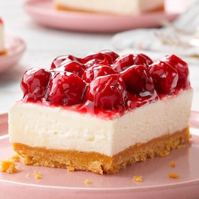

Favorite Recipes
I love to cook, and I want to spread that love with other people (including kids!) who aren't as natural in the kitchen.These recipes are easy, healthy,and super delicous! Enjoy!
Salad
 Main dishes
Main dishes
- Scrambled Eggs
- Banana Pancakes
- Grilled Cheese Sandwich
- Creamy Tomato Pasta
- Turkey Burgers
Desserts

- Chocolate Chip Muffins
- Banana Bread
- Special Guest Meal! Kate's Chocolate Chip Cookies